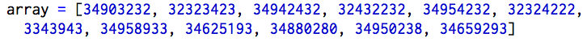
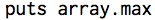
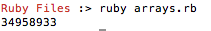
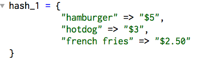

22 February 2015
Ruby: Hashes & Arrays
Happy Sunday! Hope everyone's well. Today's blog topic is Ruby and more specifically, Ruby's Array and Hash classes.
Ruby allows for two ways to store sets of data in a single place: Arrays & Hashes. Why does this matter? Well, aside from allowing you to stay organized and know where useful data is stored, arrays and hashes make your life easier by allowing you to apply the same method to every object in a collection of data all at once, through a process called iteration.
Confused? Let's try an example.
Say for instance, you had a set of data that consisted of these similar looking numbers: [34903232, 32323423, 34942432, 32432232, 34954232, 32324222, 3343943, 34958933, 34625193, 34880280, 34950238, 34659293]. And say you wanted to know what number had the maximum value of all of them. Sure, you could take the time to go through and compare each number, but what a lot of effort for such a simple little task. Ruby's array class, however, allows you to find the answer in seconds.
The first step is to create an array that includes all of the aforementioned numbers, like so:

As you can see [] (brackets) are used to define an array in Ruby.
Now that our array is defined, we can call the method "max" on our entire array, like so:

And in a few milliseconds we are given an output of:

Of course this is a very basic example of how we can use arrays, and there are infinitely more ways to use them, but the concept is the same. Arrays, and similarly hashes, make our lives easier by allowing us to manipulate large sets of data in a fraction of the time it would take to manipulate the individual elements on their own.
Hashes are similar to arrays but instead of being defined by brackets we use { } (curly braces) to create a new hash. Furthermore, whereas arrays provide you a medium for storing single pieces of data in a sequential order, hashes allow you to store anything you want in a single place, whether they're related or not. You can store integers, strings, arrays, and anything in between all within the same hash. There's no sequence to it.
So how do you find something in a hash, given there is no order to it? The answer is keys. Every piece of data in a hash is assigned a corresponding and completely unique key when it is added to a hash. When you want to find a particular piece of data, all you have to do is look up the key that was assigned to it, and you should be able to find the data you're looking for.
Here's a simple example of a hash that consists of restaurant items and corresponding prices. In this case, the menu items acts as the keys and the prices are the data we're storing in the hash.

Again this was a simple example, but the applications are endless.
| Previous | Next |